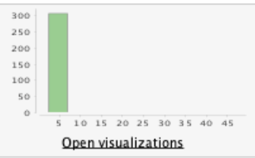
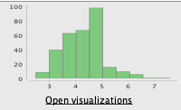

Nicolás Pavón
Prediciendo la enfermedad crónica de riñón
El problema
Muchas personas lidian con enfermedades renales a nivel global. Estas pueden manifestarse de repente debido a diversos factores de riesgo, como lo que comen, su entorno y su forma de vida. La detección de estas enfermedades puede ser invasiva, costosa y lenta. Incluso puede ser arriesgada. Por esta razón, especialmente en lugares con recursos limitados, muchos pacientes no son diagnosticados ni tratados hasta que su enfermedad renal ya está avanzada. Por lo tanto, encontrar formas de detectar estas enfermedades temprano es realmente importante, especialmente en países en desarrollo donde el diagnóstico tardío es común.
Los datos
Existen muchos conjuntos de datos que contienen información de pacientes con esta enfermedad que se pueden utilizar para lograr nuestro objetivo de predecir la enfermedad renal crónica. En este caso, vamos a utilizar el conjunto de datos proporcionado por el repositorio de UCI. Al analizar la descripción del conjunto de datos y los datos en sí, podemos definir los tipos y roles de los atributos:
Información del dataset
| Name | Abbreviation | UCI Description | Observed type |
|---|---|---|---|
| Age | age | Numerical | Integer |
| Blood Pressure | bp | Numerical | Real (in mm/Hg) |
| Specific Gravity | sg | Nominal | Polynomial (1.005, 1.010, 1.015, 1.020, 1.025) |
| Albumin | al | Nominal | Polynomial (0, 1, 2, 3, 4, 5) |
| Sugar | su | Nominal | Polynomial (0, 1, 2, 3, 4, 5) |
| Red Blood Cells | rbc | Nominal | Binary (normal, abnormal) |
| Pus Cell | pc | Nominal | Binary (normal, abnormal) |
| Pus Cell Clumps | pcc | Nominal | Binary (present, notpresent) |
| Bacteria | ba | Nominal | Binary (present, notpresent) |
| Blood Glucose Random | bgr | Numerical | Real (bgr in mgs/dl) |
| Blood Urea | bu | Numerical | Real (bu in mgs/dl) |
| Serum Creatinine | sc | Numerical | Real (sc in mgs/dl) |
| Sodium | sod | Numerical | Real (sod in mEq/L) |
| Potassium | pot | Numerical | Real (pot in mEq/L) |
| Hemoglobin | hemo | Numerical | Real (hemo in gms) |
| Packed Cell Volume | pcv | Numerical | Real |
| White Blood Cell Count | wc | Numerical | Real (wc in cells/cumm) |
| Red Blood Cell Count | rc | Numerical | Real (rc in millions/cmm) |
| Hypertension | htn | Nominal | Binary (yes, no) |
| Diabetes Mellitus | dm | Nominal | Binary (yes, no) |
| Coronary Artery Disease | cad | Nominal | Binary (yes, no) |
| Appetite | appet | Nominal | Binary (good, poor) |
| Pedal Edema | pe | Nominal | Binary (yes, no) |
| Anemia | ane | Nominal | Binary (yes, no) |
| Class | class | Nominal | Binary, and label (ckd, notckd) |
Importando la información
Al importar los datos, notamos que es necesario modificar los tipos de varios atributos ya que RapidMiner no hizo un buen trabajo de forma automática.

Observamos que la mayoría de los atributos se reconocen como 'polinómicos', aunque solo unos pocos deberían serlo. Editamos todos los atributos, asignando los tipos definidos en la tabla anterior. Eliminamos filas que puedan causar problemas (por ejemplo, una fila contiene 'no' en la columna 'clase', podría interpretarse como 'nockd', pero como es un solo valor y no estamos seguros, eliminarlo no causará problemas). Finalmente, renombramos los atributos para hacer que sus nombres sean más descriptivos y fáciles de trabajar.
Statistics
Una vez que la información fue cargada en RM, podemos estudiarla analizando las siguientes estadísticas:


A partir de las estadisticas realizamos las siguientes observaciones:
- Es un conjunto de datos con muchos valores faltantes en varios atributos.
- El atributo 'clase' está bastante equilibrado.
-
La columna 'potasio' contiene 2 valores atípicos: asumimos que
se omitió un punto decimal en la entrada, ya que los valores
47 y 39 tendrían más sentido si fueran 4.7 y 3.9.
- Editamos estos datos en el conjunto de datos y volvemos a ejecutar las estadísticas.
Antes
Después
-
La columna 'sodio' contiene otro valor atípico con un valor de
4.5 (los valores oscilan entre 100 y 163).
- Dado que hay muchos valores faltantes (87) para esta columna, simplemente eliminamos este valor y al volver a ejecutar las estadísticas, podemos ver las siguientes mejoras:

Antes

Después
-
Observamos en las estadísticas iniciales que algunos atributos
están fuertemente desequilibrados. Esto se puede mejorar
utilizando funciones logarítmicas o exponenciales para
equilibrar los datos y mejorar los resultados.
- Blood pressure
- Albumin
- Sugar
- Blood glucose random
- Blood urea
- Hemos observado que los niveles de Serum creatinine parecen estar significativamente desequilibrados. Tras un examen más detenido de los datos, hemos identificado valores como 76, 32 y 24 mg/dl, que son considerablemente elevados para una persona típica. Una breve investigación indica que los valores normales suelen oscilar entre 0.7 y 1.3 mg/dl, significativamente más bajos que los valores que han levantado sospechas. Sin embargo, es importante tener en cuenta que estos valores podrían atribuirse a un paciente enfermo, lo que los hace potencialmente válidos. Como resultado, hemos decidido mantener estos valores en su forma actual. No obstante, permaneceremos vigilantes con respecto a su posible impacto en el futuro y realizaremos una investigación más exhaustiva para determinar si deben ser clasificados como valores atípicos.
Lidiando con valores faltantes
Al examinar las estadísticas, notamos una presencia sustancial de valores faltantes. Abordar este problema ofrece varias alternativas. Podemos optar por sustituirlos por promedios o datos derivados de manera lógica, eliminar por completo las filas que contienen valores faltantes, o emplear métodos de aprendizaje automático para predecir los valores faltantes en función de los datos disponibles.
Sin embargo, es esencial ser cauteloso con estas técnicas, ya que podrían introducir datos inexactos en el sistema, potencialmente comprometiendo o deteriorando el resultado final. Además, algunos algoritmos son capaces de manejar valores faltantes. Por lo tanto, en nuestra versión inicial, trabajaremos con los valores faltantes en su estado actual. Si identificamos margen de mejora, podemos explorar estas técnicas en una etapa posterior.
Estudiando atributos correlacionados
Una vez en RapidMiner, podemos utilizar rápidamente el operador de la matriz de correlación para obtener más información sobre estos atributos.
A simple vista, no encontramos atributos altamente correlacionados. La mayor correlación se encuentra entre el atributo clase con hemoglobina, volumen de glóbulos rojos y conteo de glóbulos rojos. Sin embargo, el valor de correlación no supera 0.77, por lo que por el momento lo dejaremos tal como está.
Modelado
Ahora viene la parte divertida. Comenzaremos a procesar los datos con algunos modelos de aprendizaje automático para averiguar si podemos predecir el valor objetivo. Dado que vamos a intentar clasificar nuevos datos entrantes en dos posibles resultados, ckd y notckd, podemos identificar claramente esto como un problema de clasificación. Por lo tanto, haremos uso de modelos de clasificación.
Algunos modelos de clasificacion que podemos utilizar son Logistic regression, Linear discriminant analysis, KNN y Naive bayes
Validación
Para evaluar el rendimiento de los modelos, emplearemos el operador de Cross validaion de RM, utilizando una estrategia de 5 divisiones. La validación cruzada implica dividir el conjunto de datos en cinco subconjuntos, y el modelo se entrena y valida cinco veces. Cada subconjunto se utiliza como conjunto de validación exactamente una vez, garantizando una evaluación exhaustiva. Este enfoque no solo utiliza todos los datos disponibles, sino que también prueba la capacidad del modelo para generalizar a datos no vistos, lo que lo convierte en un método de validación sólido.
Feature selection
Podemos observar que hay muchas características con información aquí. Algunas de estas características pueden no ser útiles y podrían impactar negativamente no solo en el rendimiento en términos de eficiencia, sino también en el resultado en sí.
Para analizar estas características en busca de las más útiles, podemos emplear diversas técnicas. Sin embargo, optaremos por el operador de RM llamado Optimize selection (evolutionary). Este operador repite esencialmente todo el proceso varias veces, seleccionando diferentes atributos en cada iteración y evaluando su rendimiento. En última instancia, este operador nos ayudará a identificar las características más útiles, lo que resultará en un mejor rendimiento. Cabe destacar que elegimos 'evolutiva' porque es la opción más probable para evitar llegar a un máximo local.
Logistic regression
Vamos a trabajar con el primer algoritmo, logistic regression. Lo conectamos al operador de validación cruzada y presionamos "play".

Luego de que termina de procesar los datos, observamos los resultados:

100%! 🤯
Parece un poco demasiado bueno para ser verdad, 쯡o? Puede haber problemas con los datos que conducen a un resultado tan bueno pero que resulta ser falso. Por otro lado, observamos que el operador Optimize selection aumentó el rendimiento del 98% al 100%. Aunque este resultado puede ser engañoso, continuaremos trabajando con otros modelos para ver cómo se desempeñan. Es importante ser crítico con los resultados y considerar posibles problemas en los datos o en el proceso de modelado.
Linear discriminant analysis
LDA no admite trabajar con valores faltantes, pero de todos modos vamos a intentarlo llenando los datos con valores promedio. Esto no es una buena idea porque implica información inventada, pero lo probaremos de todos modos para ver cómo se desempeña. Además, LDA no admite atributos binomiales o polinomiales. Para resolver esto, utilizaremos el operador Nominal to numerical, que transformará los valores de atributos binomiales y polinomiales en valores numéricos.


Luego de que termina de procesar los datos, observamos los resultados:
96.48% 😎
No está mal para tener tantos valores inventados. Jugando con los operadores, descubrimos que al dejar fuera las filas con valores faltantes (muchas filas), la precisión fue del 61%, y al autocompletar los valores faltantes, la precisión subió al 90%. Esto se debe probablemente a la escasa cantidad de ejemplos en el conjunto de datos que tienen todos los atributos completos. También notamos que el operador Optimizar Selección aumentó el rendimiento del 90% al 96%. Claramente, este operador es muy efectivo. Es importante tener en cuenta cómo los diferentes enfoques para manejar los valores faltantes y la selección de atributos pueden influir en el rendimiento del modelo.
KNN
KNN o k-nearest neighbours es un algoritmo computacionalmente costoso, pero dado que no estaremos trabajando con un conjunto de datos muy grande, lo probaremos para ver cómo se desempeña. Este algoritmo puede ser útil para problemas de clasificación, pero es importante tener en cuenta su costo computacional y considerar si es adecuado para el tamaño de nuestro conjunto de datos.
Luego de que termina de procesar los datos, observamos los resultados:

98.99% 😱
¡Excelente rendimiento! Lo logramos después de ajustar algunos parámetros del operador KNN y realizar un preprocesamiento de datos. Ejecutarlo en la primera instancia resultó en un rendimiento del 61%. Después implementamos el operador Normalizar, que normalizó cada atributo. Esto es especialmente útil para KNN y mejoró su rendimiento al 91%. Luego ajustamos el parámetro k del operador KNN y descubrimos que los valores alrededor de "25" resultaron ser los más eficientes, mejorando el rendimiento al 95.49%. Por último, utilizamos el confiable operador Optmize selection, alcanzando el resultado mostrado, casi un 99%🚀. Es evidente cómo el ajuste de parámetros y la selección de atributos pueden impactar significativamente en el rendimiento de un modelo.
Naive Bayes
Este algoritmo asume la independencia de los atributos y puede no funcionar bien con atributos altamente correlacionados. Sin embargo, como vimos anteriormente, no hay atributos altamente correlacionados, por lo que le daremos una oportunidad y veremos cómo se desempeña:

Luego de que termina de procesar los datos, observamos los resultados:

100% 🤑
Una vez más, un rendimiento sorprendente. Y el operador Optimize selection hizo su trabajo una vez más, llevando una eficiencia que ya era óptima al 100%. Es impresionante cómo este operador puede mejorar el rendimiento incluso en modelos que ya son altamente eficientes.
Conclusiones
Todas estas eficiencias parecen demasiado buenas para ser verdad, lo cual puede ser inquietante. Sin embargo, después de reflexionar durante un tiempo sobre las posibles razones por las que podría funcionar "demasiado bien", no logramos encontrar otra explicación mas que: Realmente funciona!.
A pesar de todo, gracias al operador de cross validation, los modelos no deberían estar sufriendo de sobreajuste, lo que podría ser una razón para tener un rendimiento tan alto. Para continuar trabajando en esto, el mejor enfoque para validar aún más los modelos sería utilizar otro conjunto de datos que sea muy similar y ya esté clasificado, y probar las eficiencias para ver si realmente funcionan tan bien como muestran.
Por último, el MVP ("jugador mas valioso") de este caso de estudio será el operador Optimize selection, que optimizó cada modelo, tanto desde el punto de vista de la eficiencia de recursos como en el rendimiento general de todos ellos. 🥳